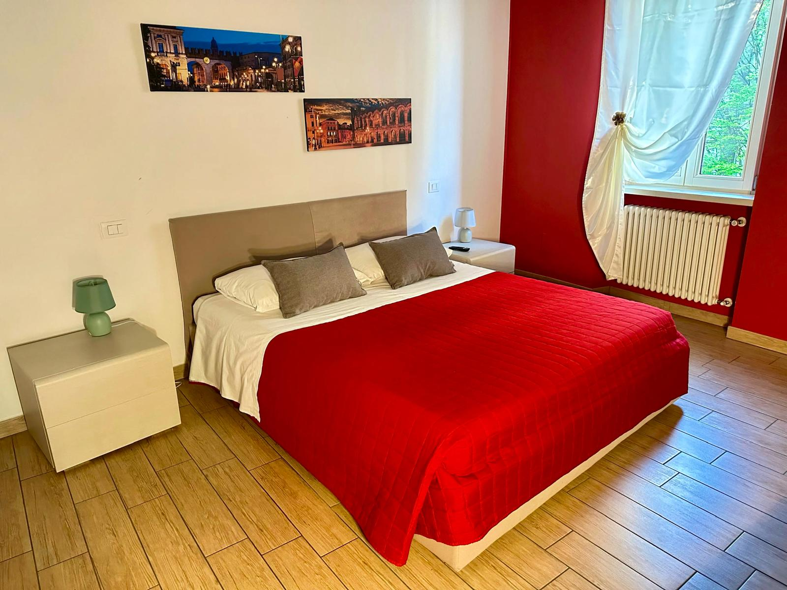
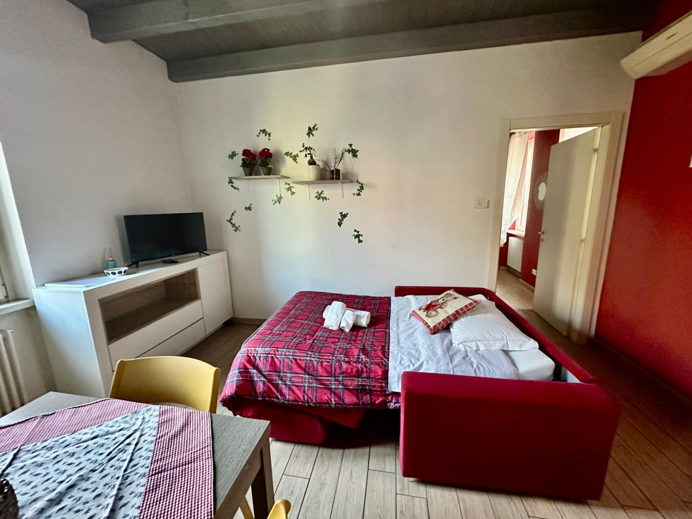
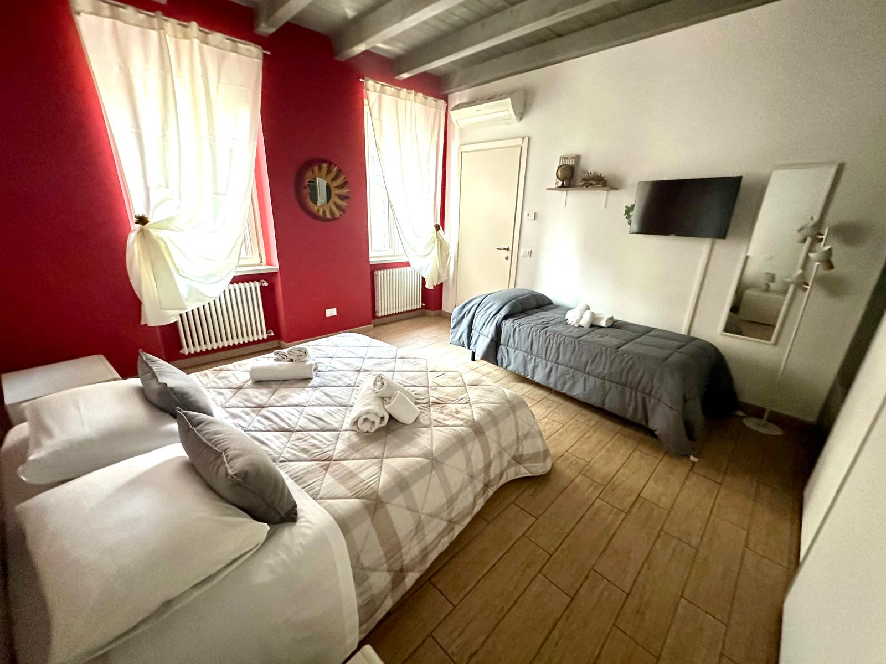
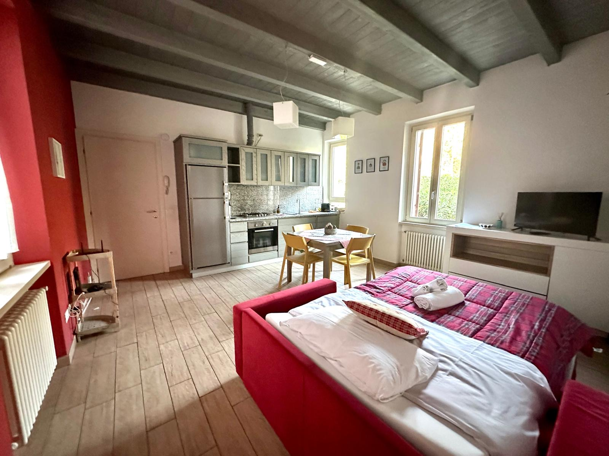
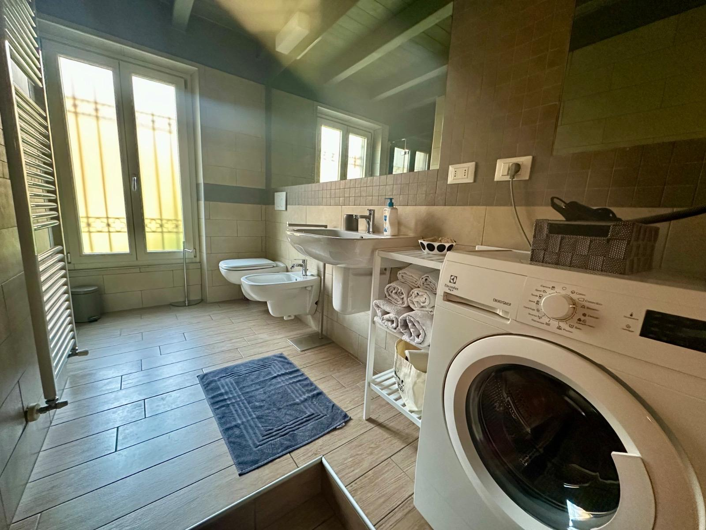

A pochi minuti a piedi dall'Ospedale di Borgo Trento
Un appartamento luminoso e tranquillo fino a 5 ospiti, per sentirti a casa anche nei giorni più impegnativi. E il centro storico di Verona a soli 1,3 km.
- Fino a 5 ospiti
- WiFi gratuito
- Centro storico a 1,3 km
- Contatto diretto con l'host

Pensato per chi ha bisogno di una base comoda a Verona
Ospedale a due passi
L'Ospedale Civile Maggiore di Borgo Trento è a circa 300 metri, 4 minuti a piedi: comodo per visite, ricoveri e turni di lavoro.
Spazio per tutta la famiglia
Fino a 5 ospiti: ideale per famiglie numerose o per chi si alterna in ospedale senza rinunciare a un po' di privacy.
Il centro storico a portata di mano
Ponte Pietra a 1,3 km, Castelvecchio a 1,7 km: la Verona più bella è a due passi, ma torni sempre in un angolo tranquillo.
Tutto pronto al tuo arrivo
Cucina attrezzata, WiFi gratuito, aria condizionata, lenzuola e asciugamani inclusi: pensiamo noi ai dettagli, tu pensa al resto.
Un rifugio comodo e accogliente in Borgo Trento
Un appartamento accogliente pensato per chi ha bisogno di una base comoda e serena a Verona — che sia per stare vicino a chi è in ospedale, per una trasferta di lavoro o per visitare la città. Ambienti luminosi, vista giardino e tutto il necessario per sentirsi a casa.
- 1 camera da letto
- Soggiorno luminoso
- Cucina con utensili, frigorifero e macchina del caffè
- 1 bagno con bidet e doccia
- Vista giardino, ambiente non fumatori




Tutto quello che serve, già pronto
Borgo Trento: ospedale a due passi, centro storico vicino
- 🏥 Ospedale di Borgo Trento (Ospedale Civile Maggiore) 300 m · 4 min a piedi
- Clinica San Francesco 4,8 km
- Ponte Pietra 1,3 km
- Basilica di Santa Anastasia 1,5 km
- Castelvecchio 1,7 km
- Basilica di San Zeno 1,7 km
- Stazione Porta Nuova / autostazione 4,3 km · ~6 min in auto
- Aeroporto Verona-Villafranca 12 km · ~17 min in auto
Scopri il prezzo del tuo soggiorno
Se hai bisogno di restare a Verona per più giorni — per cure, esami, un ricovero prolungato o un progetto di lavoro — scrivici: prepariamo una proposta su misura, con condizioni pensate per chi resta più tempo.
Richiedi un preventivo per un soggiornoCosa dicono gli ospiti
Padrona di casa gentilissima, appartamento pulitissimo, molto accogliente, consigliatissimo.
L'appartamento è spazioso, pulito e luminoso. La cucina è ben attrezzata con tutto il necessario per cucinare e mangiare. La posizione è perfetta: ha una deliziosa atmosfera locale…
Casa perfetta, dotata di ogni confort, situata in un'ottima posizione che con facilità ti permette di spostarti per tutta la città…
Top, sono stato benissimo, la casa ha tutti i comfort di cui si ha bisogno in vacanza. Inoltre la disponibilità di Sara ha reso il mio soggiorno molto più agevole, anche se mi trovavo lì non…
Appartamento molto accogliente, comodissimo per vicinanza all'ospedale Borgo Trento e per tutti i servizi raggiungibili a piedi nei dintorni. Grande disponibilità da parte della…
Ottima posizione. Appartamento nuovo e funzionale. Proprietaria molto disponibile per qualsiasi necessità o informazione.
Appartamento pulito, rinnovato, cucina funzionale, bagno grande, letto comodo, ottima posizione non molto lontano dal centro ma soprattutto molto vicina all'ospedale Borgo Trento…
Appartamento grande, pulito, e con tutti gli accessori necessari. Vicino al centro e ben servito da qualsiasi negozio che dovesse servire. Ottima soprattutto l'accoglienza e la…
Casetta molto carina e accogliente, ben arredata con tutti i comfort necessari, pulita e ordinata! Si trova in zona Borgo Trento, abbastanza vicina al…
Abbiamo soggiornato, o meglio… stiamo ancora soggiornando in questo bellissimo appartamento…. Definirlo appartamento è un po' riduttivo, la descrizione perfetta sarebbe una…
Recensioni reali raccolte da Google.
Tutto quello che vuoi sapere
A che ora sono il check-in e il check-out?
Check-in dalle 17:00, check-out entro le 11:00.
Il parcheggio è garantito?
Il parcheggio è pubblico, in strada, nelle vicinanze dell'appartamento: sono disponibili sia posti gratuiti che a pagamento, non riservati.
L'appartamento è dotato di lenzuola e asciugamani?
Sì, lenzuola e asciugamani sono inclusi.
La cucina è attrezzata?
Sì, la cucina è attrezzata con utensili, frigorifero e macchina del caffè.
Come arrivo in ospedale dall'appartamento?
L'Ospedale Civile Maggiore di Borgo Trento è a circa 300 metri, 4 minuti a piedi.
Posso restare per un soggiorno lungo?
Sì: per soggiorni di più giorni per motivi di salute o di lavoro prepariamo una proposta su misura. Scrivici per un preventivo personalizzato.
In quanto tempo posso avere un preventivo?
Ti ricontatteremo nel giro di poche ore da quando invii la richiesta.
Il momento giusto per scriverci è adesso
Preventivo gratuito, nessun impegno: ti rispondiamo con una proposta su misura per le tue date, direttamente da Sara.
Richiedi un preventivo →Risposta rapida su WhatsApp · Tariffe su richiesta · Parcheggio pubblico nelle vicinanze